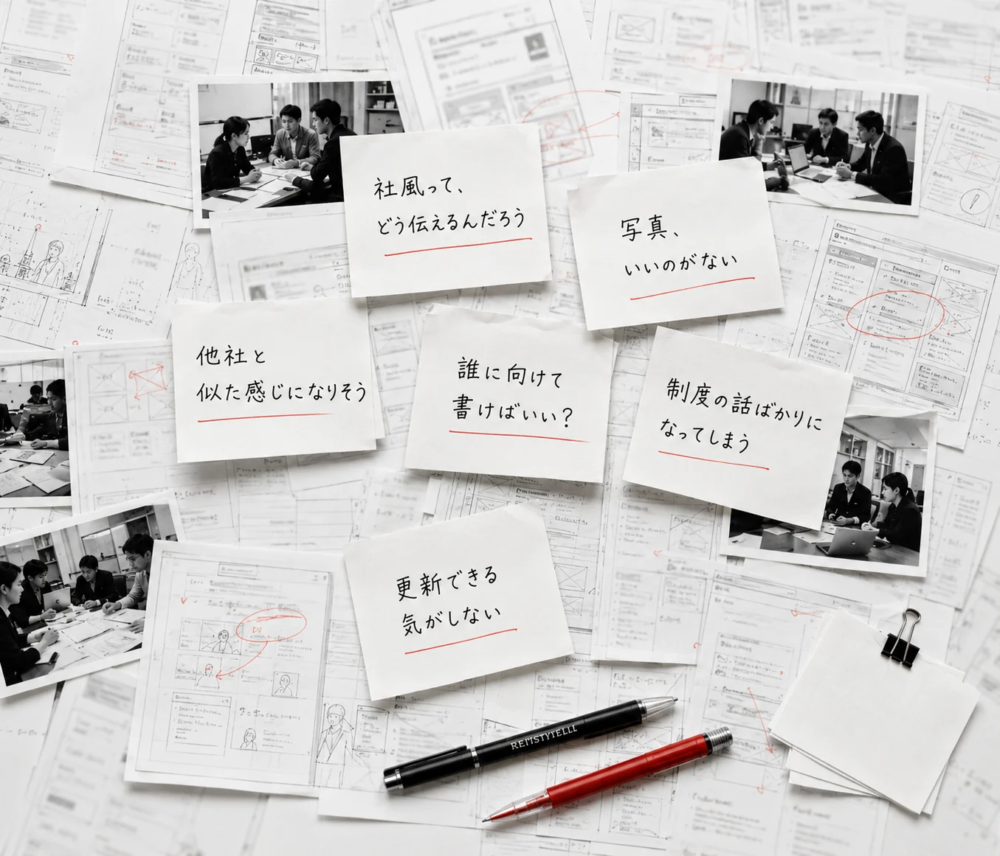
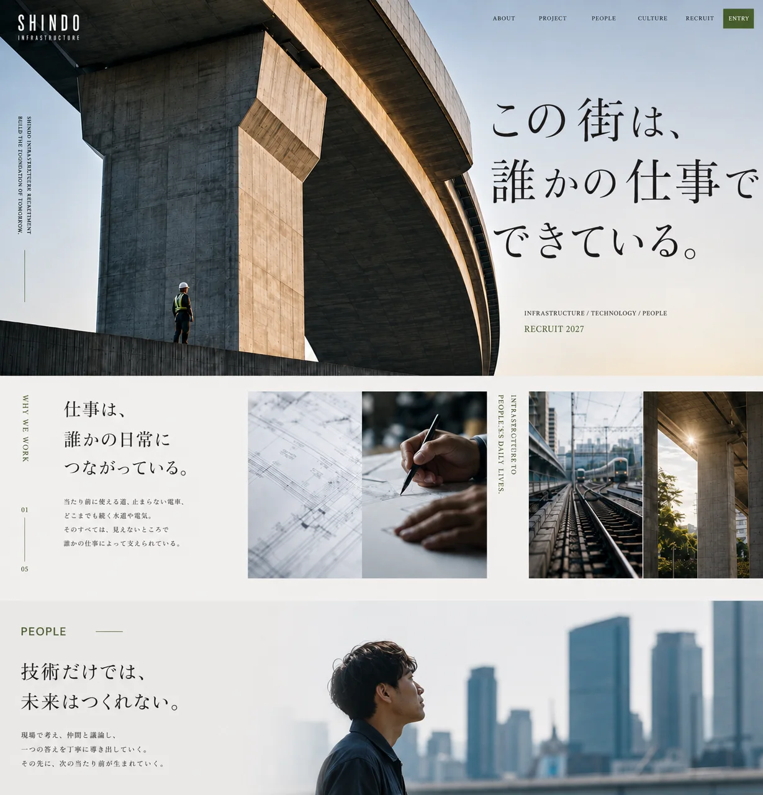

01 月額
27,000円〜（税別）
月額2.7万円から。必要な表現を足しながら、採用サイトを育てていけます。
RECRUITING SITE STUDIOTILTO°
つくって終わりにしない。
月額で持ち、育てつづける採用サイト。
採用コンサルタント × AI × Web制作
01 月額
27,000円〜（税別）
月額2.7万円から。必要な表現を足しながら、採用サイトを育てていけます。
02 初期費用
0円
制作開始時のまとまった費用は不要。はじめやすい料金設計です。
03 制作スタイル
1社1設計
テンプレートに当てはめない、その会社だけのオリジナル設計。
公開して終わりにしない。
採用の変化とともに、
更新し、改善しつづける。
制作費が大きく、
踏み出せない。
公開までに
時間がかかりすぎる。
つくっても、
その先が見えない。
RETHINK THE RECRUITMENT SITE.採用サイトの常識を、
更新する。
その「なんとなく」を、ちゃんと形にする。
言葉になる前の想いから、
いっしょに、かたちの糸口を見つけていきます。
言葉にならなかった想いを整理し、
採用サイトという形で、未来へつなげます。


業界も、職種も、伝え方も、設計も。
採用サイトは、もっと自由でいい。
その可能性を、35の表現サンプルで。
05 成果にこだわる
採用は、感覚じゃない。
構造でつくり、言葉で届け、
体験で動かし、改善していく。
Tiltoでは、デザインクオリティは大前提に、
採用コンサルタントがこれまでの採用支援で培ってきたノウハウを活用し、
「応募が集まる採用サイト」を設計します。
市場・競合・ユーザーを読み解き、課題の本質を定義する。
独自の言葉を設計し、メッセージの芯をつくる。
情報を整理し、伝わる順番と優先順位を設計する。
情報の地図を描き、迷わずたどれる構造をつくる。
行動の流れを設計し、次のアクションへ自然に導く。
世界観を視覚化し、信頼と共感を生むデザインに。
指標を設計し、成果を正しく計測する。
データから学び、仮説を立て、改善を積み重ねる。
PRICE
※表示価格は基本プランの月額料金です。
※内容や更新範囲に応じてご案内します。
A.最低契約期間は6ヶ月です。
12ヶ月間継続いただけた場合、無料でのデザイン更新、またはコードのお渡しをお選びいただけます。
A.問題ありません。一緒にご用意いたします。
A.最初のお打ち合わせから最短1週間で完成いたします。
A.実際に応募が集まるサイトを、お手軽に制作可能です。